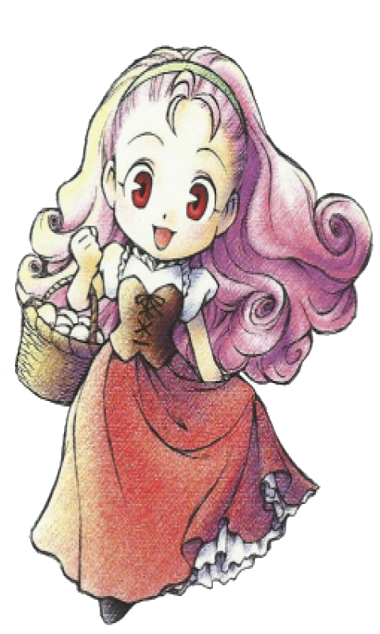

Esposas Disponíveis |
|||||
Há cinco esposas que você pode escolher para se casar: Ann, Elli, Karen, Maria e Popuri. Cada uma delas tem sua própria personalidade e o que elas gostam e não gostam também. |
|||||
 Ann |
Elli |
 Karen |
 Maria |
 Popuri |
|
Antes de se casar, uma garota deve ter um coração rosa por você, mostrado no canto inferior direito da caixa de texto dela enquanto você fala com ela. A ordem dos "corações" são: branco, azul, verde, amarelo e o último é rosa. Não é a única coisa, embora -- você precisará ter a cozinha construida pelos carpinteiros para sua casa (Veja Expandindo a Casa) antes dela aceitar. Últimamente, para propor em casamento, você precisará ter a pena azul. Como conseguir uma? Quando uma garota está próximo de se casar, Rick irá vender a pena azul em sua loja. O preço é de 1000G, mas ele irá descontar 20G só pra você. |
|||||
Depois do Casamento |
|||||
Depois de você se casar, se você estiver de bem com sua esposa, ela fará algumas tarefas pra você. Veja aqui o que cada garota fará: |
|||||
Filhos |
|||||
Antes de você fazer qualquer coisa, você deve pedir aos carpinteiros para construir a cama do bebê. Se você já tem e você trata bem sua esposa, depois de uma estação de casamento, sua esposa começara a reclamar de sintomas estranhos -- ela vai querer comer coisas esquisitas, ela vai ter muita dor na barriga. Depois de outra estação, sua esposa falará pra você que ela está grávida!
Ela começara a se preparar para o bebê, fazendo coisas como ler livros maternais. Seu filho nascerá depois de uma estação. |
|||||
O dia do nascimento (se você fez tudo corretamente, será em três estações depois de seu casamento) você acordará e vai encontrar sua esposa na cama e a parteira e um membro da família de sua esposa na casa. A única coisa que você pode fazer é sair e esperar dar 15:00/3:00, desde que seu bebê não nascerá até ai e Zack não deixará você sair da sua fazenda. Entre depois das 3:00 e você escutará que sua esposa deu a luz a um filho. Quando dito isso, fale com sua esposa e você terá a oportunidade de dar um nome ao seu filho e uma foto para se lembrar do evento. |
|||||
Primeiro Estágio: O primeiro estágio do se filho dura uma estação. Neste tempo, ele fica nos braços da mãe em seu berço, agindo tão vivo quanto um tronco. É difícil dar presentes neste estágio -- você só pode dar a ele coisas enquanto ele está no berço e as chances de você perder e soltar o que quer que seja que você está tentando dar a ela é alto, então a melhor coisa que você pode fazer é mostrar seu cachorro. |
|||||
Segundo Estágio: Whoo, ele está um pouco crescidinho e está dez vezes mais fácil de dar coisas a ele! Ele gosta de coisas quando você mostra seu cachorro e especialmente adora leite. Ele engatinhará perto da sua esposa, fazendo coisas bonitinhas como sons de bebê. Você pode ainda pegar ele e carrega-lo se você quiser. Durante este estágio, você pode acordar uma manhã e encontra-lo doente. Sua esposa entrará em pânico e você terá a opção de chamar um membro da familia de sua esposa, a parteira ou o Dono da loja de poções para ajudar. Não importa o que você faça, embora alguém vir simplesmente ajudará seu filho a ficar melhor. Este estágio dura três estações. |
|||||
Terceiro Estágio: Este estágio ocorre depois de seu filho completar um ano. Infelizmente você não pode mais apanha-lo e leva-lo para uma caminhada pela cidade. Embora ele começara a dizer coisas fofinhas como frases aleatórias. Este é o último estágio, não importa quanto você jogue, seu filho sempre será uma criança pequena. |
|||||